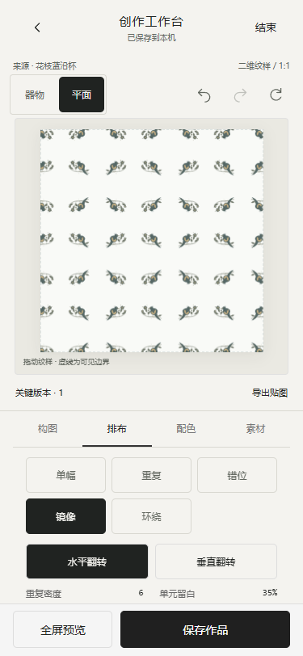
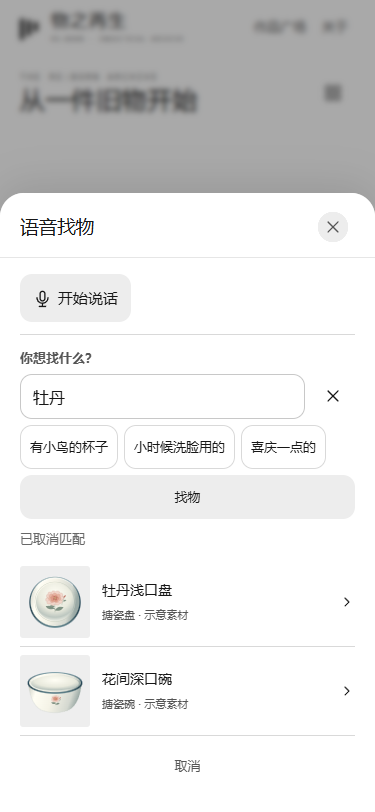

2026-10-30 · 本地实现，未发布。学校真实 AI 请求尚未执行，运行中未配置服务端密钥。
搜索：prototype/search-assistant.js、explore.js、explore-home.js、app.js；服务端：scripts/search-service.cjs、serve.cjs、start-search.ps1、.gitignore。静态服务现在限制公开路径，不会公开.env、仓库内部和服务端脚本。
编辑：prototype/pattern-layouts.js、pattern-texture.js、editor-views.js、editor-model.js、editor.css、model.js、foundation.js、work-result.js、schema.d.ts、index.html。旧草稿缺失的新参数自动补默认值，新增参数进入快照与作品版本。构建更新根index.html和单文件HTML。README补充运行方式。
参考 Repper官方功能说明中的排布、配色和快照思路；没有复制其素材或源码，也没有声称实现全部墙纸群、无缝边缘融合或云同步。


本地入口。正常启动：设置PORT为8879并运行npm start。学校服务：先停止同端口预览服务，再运行powershell -File scripts/start-search.ps1，隐藏输入密钥。密钥不写入文件、不进入前端。服务端模型名称DeepSeek-V4.1-Flash由用户提供，仍需真实鉴权测试。
未接入图像AI、正式馆藏、云同步、馆方积分与生产授权。生成图片服务继续暂停。编辑导出不保证工业无缝拼接或生产合规；器物模型为程序化示意。